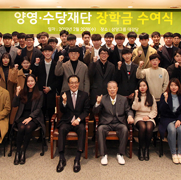

인재육성
-
-
청소년희망재단 파랑마니또 멘토링 활동
삼양은 청소년들의 바른 성장을 위해 법무부 산하 공익재단인
청소년희망재단을 후원하고 있습니다.
그룹 임직원들은 청소년희망재단의 파랑마니또 프로그램에
참여해 멘티로 활동하고 있습니다.
파랑마니또는 조건부 기소유예 처분을 받은 청소년을
대상으로 실시하는 일대일 멘토링 프로그램입니다. -
청소년희망학교 베이커리 꿈나무 육성
삼양은 청소년들의 진로를 지원하는 프로그램의
일환으로 청소년희망재단에서 운영하는
청소년희망학교 학생들을 대상으로 베이커리 꿈나무
육성 프로그램을 운영하고 있습니다. 학생들은 큐원
쿠킹클래스 전문 강사와 함께 다양한 베이커리 제품을
직접 만들고 체험하면서 자신의 적성을 파악하고
발전시켜 나가고 있습니다. - 
-
-
-
삼양사 여자 사이클팀
삼양은 사이클이 국내에 잘 알려지지 않았던 1986년에
여자 사이클팀을 창단해 현재까지 지속적으로 후원,
운영하며 비인기 스포츠 분야 발전에 기여하고
있습니다. 삼양사 여자 사이클팀은 창단 이래 수많은
국가 대표 선수를 배출했으며, 한국 신기록을 세우며
침체된 한국 여자 사이클에 활력을 불어넣고 있습니다 -
삼양영·수당 재단
삼양그룹은 양영재단과 수당재단을 운영하며 인재를 육성하고 있습니다. 국내최초의 민간 장학재단인
‘양영재단’ 은 삼양사의 창업자 수당 김연수 회장에 의해 설립되었으며, 1968년에는 ‘수당재단’을 설립하여
장학사업을 확대하였습니다. 양영·수당재단은 매년 어려운 환경 속에서도 학업성적이 우수하고 타의
모범이 되는 학생들을 선정하여 장학금을 지급하고 있으며, 교수 및 연구단체 등에 학비와 연구비를
지원하고 있습니다. 특히 수당재단에서는 수당상을 제정해 매년 기초과학, 응용과학, 인문사회 분야에서
우수한 업적을 이룬 교수들에게 총 3억원의 상금을 수여하고 있습니다.
-
건강증진
-
혁신신약살롱 프로그램 지원
삼양은 판교 디스커버리센터에서 우리나라 바이오 업계의 오픈 이노베이션(협업을 통한 혁신) 모임인 혁신신약살롱 행사를
후원하여 의약바이오 산업 활성화에 기여하고 있습니다. 혁신신약살롱은 국민 건강과 직결되는 바이오 산업의 R&D 활성화를
위한 모임입니다. 혁신신약살롱 행사 지원으로 오픈 이노베이션 활성화, 제약/바이오 기술 벤처사와의 네트워킹 확대, 핵심기술
및 동향, 트렌드 공유를 통해 개방형 혁신을 주도하고 있습니다. -
-
-
사랑이 빵빵해 제빵 봉사활동
삼양의 임직원들과 가족, 지인들이 참여하여 큐원 밀가루, 가공유지
등 후원한 회사 제품으로 빵을 만들고, 이를 어려운 이웃에게
전달하는 빵 봉사활동을 실시하고 있습니다. 인근의 독거노인,
조손가정, 다문화가정 등 어려운 이웃에게 직접 만든 빵을 전달하며
이웃 사랑을 실천하고 있습니다. -
아름다운 나눔보따리
삼양은 아름다운가게에서 진행하는 아름다운 나눔보따리 행사에
2005년부터 동참하고 있습니다. 나눔보따리 행사는 쌀, 생필품으로
구성된 보따리를 어려운 이웃에게 직접 전달하는 행사로, 삼양은
제품을 기부하고 임직원과 가족들은 배달천사로 참여하고 있습니다.
-
-
-
류마스탑으로 어르신 건강지킴이 활동
삼양은 삼양바이오팜의 관절염치료제인 류마스탑으로 어르신
건강지킴이 활동을 하고 있습니다. 복지센터 저소득층 어르신들의
건강을 위해 류마스탑을 기부하고, 봉사활동도 펼쳐 건강뿐 아니라
일상생활 돕기도 함께 진행하고 있습니다. -
사랑의 집 고치기, 연탄배달, 헌혈
삼양은 어려운 이웃들의 주거환경 개선, 따뜻한 겨울나기를 위해
사랑의 집 고치기, 연탄배달을 실시하고 있습니다. 그룹 임직원들이
봉사활동에 참여해 따뜻한 마음을 이웃과 나누고 있습니다. 또한
사랑의 헌혈 운동에도 동참해 이웃의 건강을 지키는데 앞장서고
있습니다.
-
-
환경보전
-
자연사랑 파란마음 글·그림 축제
후손들에게 물려줄 아름다운 환경을 지키는데 힘을 보태기
위해 1996년부터 전북지역에서 자연사랑 파란마음 글•그림
축제를 개최하고 있습니다. 행사에 참가하는 초등학생들은
그림 그리기, 중학생들은 글짓기를 통해 자연사랑의 마음을
원고지와 도화지에 담아 그 뜻을 새기고 있습니다. 학생과
가족을 포함한 1만여 명이 참석하는 대규모 환경 행사로,
기업이 운영하는 대표적인 환경축제로 자리 잡았습니다. -
삼양과 함께 꿈꾸는 미래 과학캠프
삼양은 일상에서 쉽게 접하면서도 잘 모르는 과학의 세계를
경험하게 하고, 생활 속 과학 및 환경에 대한 흥미를
일깨워주고자 초등학생을 대상으로 삼양과 함께 꿈꾸는 미래
과학캠프를 운영하고 있습니다. 학생들은 과학캠프에서 PET
병, 밀가루, 식용유, 플라스틱 점토, VR고글 제작 등 다양한
실험 재료와 도구를 이용해 과학실험과 만들기를 하면서
융합 사고력과 창의성을 키우고 있습니다. -
1사1하천 정화, 1사1촌 자매결연
삼양은 기업과 지역을 연계하는 프로그램을 통해 다양한
환경보호 활동에 참여하고 있습니다. 전국에 산재한 그룹의
여러 사업장에서 1사1하천 정화 운동을 실시하며 깨끗한
자연보호를 위해 노력하고 있습니다. 또한 농촌에 대한
이해를 키우고 기업과 농업인의 균형 발전을 위해 농협과
연계해 사업장 인근 마을과 농촌사랑 1사1촌 자매결연을
맺고 있습니다. -
아름다운 가게 동대문점
아름다운 가게는 의류, 신발, 가방, 책, 음반, 주방용품,
액세서리, 유아용품, 레저용품 등 기업과 시민이 기증한
물품을 매장에서 판매해 얻은 수익금으로 공익기금을
조성하고 각종 자선사업을 하는 곳입니다. 삼양은 아름다운
가게 동대문점을 열어 함께 사는 사회, 함께 나누는 세상을
만드는 데 힘을 보태고 있습니다. 한걸음 더 나아가 매장
개설뿐 아니라 전사적인 캠페인을 통한 물품 수집 및 기증
활동, 직원과 가족들의 자발적인 매장 자원봉사를 실시하고
있습니다.